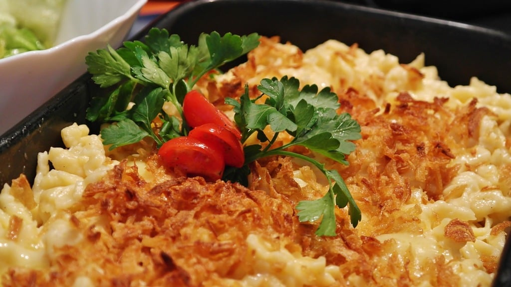

Macaroni and Cheese

Macaroni and cheese, though it has a european origin, has become a common dish in most households around the world. It is simply a pasta and cheese dish, though many people garnish and prepare it differently!
Ingredients
- Elbow Macaroni
- Butter, salted or unsalted
- ground black pepper
- milk
- Flour
- Half and Half
- shredded cheese, aged cheddar and not pre-shredded
- Cook macaroni
- Make the roux, melt butter in a saucepan and add flour, salt, and pepper
- Add milk and cheese into saucepan and stir
- Pour into baking dish and mix
- Combine the cooked pasta and the mixture from the sauce pan
- Optional: Bake the pasta for 10-15 minutes in the oven with an extra layer of shredded cheese on top
Home